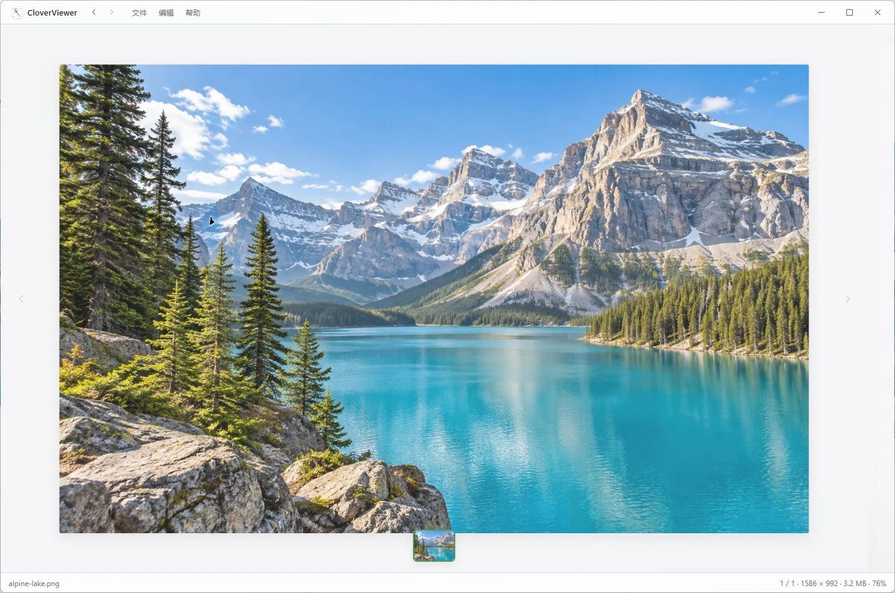
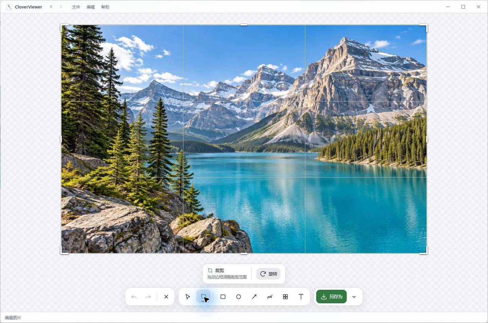

流畅看图
打开文件夹，轻松浏览。

打开文件夹，轻松浏览。
圈出重点，表达更清楚。
超出一屏，也能留住。
图片里的文字，随手复制。
从浏览到分享
常用的工具放在一起，让每一步都更自然。
网格与单图视图自由切换。缩放、旋转、翻转，查看图片尺寸与 EXIF，让细节尽收眼底。
PNG / JPEG / GIF / BMP / WebP / TIFF
多屏截图、九宫格裁切、箭头与文字标注，配合马赛克和撤销重做。编辑完成，复制或导出 PNG、JPEG、WebP。
截图 · 裁切 · 标注 · 导出

Windows 原生 OCR，识别中、英、日文字。提取后可直接复制，无需上传到在线识别服务。
把灵感留在眼前。
把灵感留在眼前。
中文 / English / 日本語
生成临时链接与二维码，让同一局域网里的设备预览、下载。支持有效期与一次下载后失效。
临时分享 · 到期失效
还有一些贴心的小事。
明暗主题与界面缩放全局热键与系统托盘可选 Live2D 桌宠手动检查与签名验证更新少一步，更顺手
截图、长截图与取色热键可以在设置中修改。
开始之前
免费且开源，采用 MIT 协议。个人使用、公司内部使用和二次开发都可以，只需保留版权声明。
支持 Windows 10 / 11，需要 WebView2 运行时。在 GitHub Releases 下载 NSIS 安装包即可，无需管理员权限；也可以使用便携版 CloverViewer.exe。
不会上传到第三方服务。图片浏览、截图、标注、拼接和 OCR 都在本地完成。如果你主动创建局域网分享，持有链接的同一网络设备可以临时访问该图片；手动检查更新时会连接 GitHub Releases。
不能保证所有应用都成功。默认按你手动滚动的节奏拼接，自动滚动是默认关闭的试验功能。动态内容、大面积动画等可能影响拼接；停止或失败时，已捕获部分会保留。
在兼容的 MCP 客户端中，将命令指向 CloverViewer.exe 并传入 --mcp。也支持仅本机监听、需令牌的 HTTP 模式。具体配置与工具参数见 MCP 使用指南。
这是 CloverViewer 的 Tauri 2 重实现，采用 Rust 后端与 Web 前端。原版基于 egui；两者共用 %APPDATA%\CloverViewer\config.json 配置。
需要更多细节？